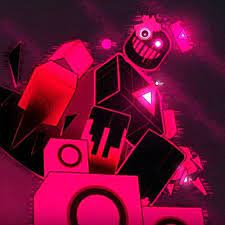

JOHN DOE
John doe é um personagem de forsaken, da classe killers, possuindo 3 habilidades nas quais usa escuridão para atacar e localizar os sobreviventes
HABILIDADES:
CORRUPTED ENERGY: John doe cria uma horda de espinhos negros do chão, que se acertado nos jogadores, causará efeito de veneno.
ALCANÇE: longo
DANO: 12
COOLDOWN: 18 segundos